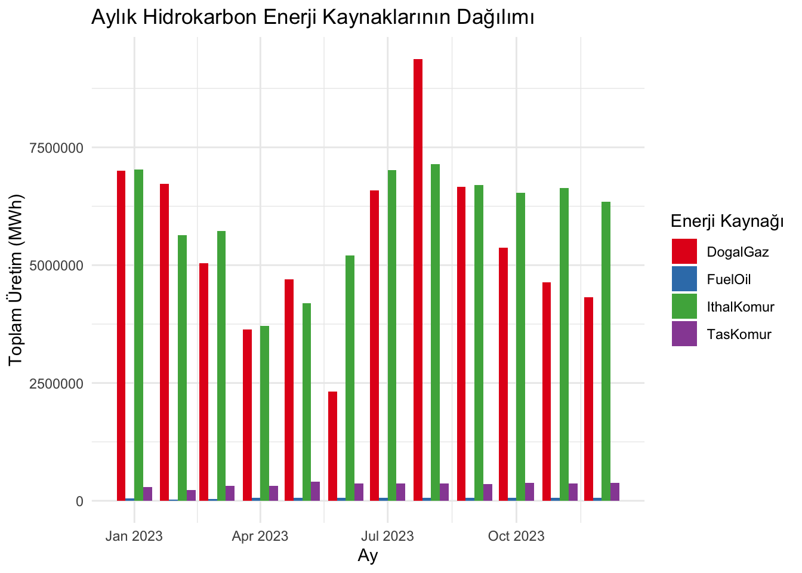
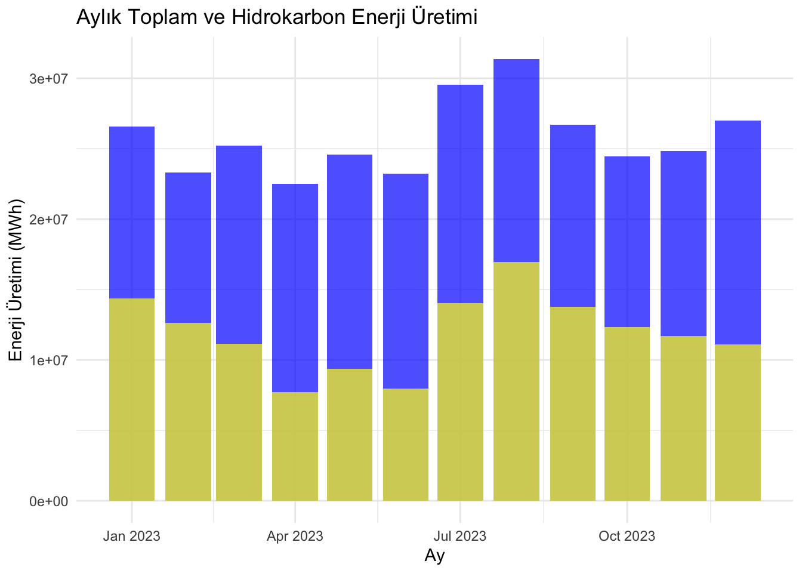
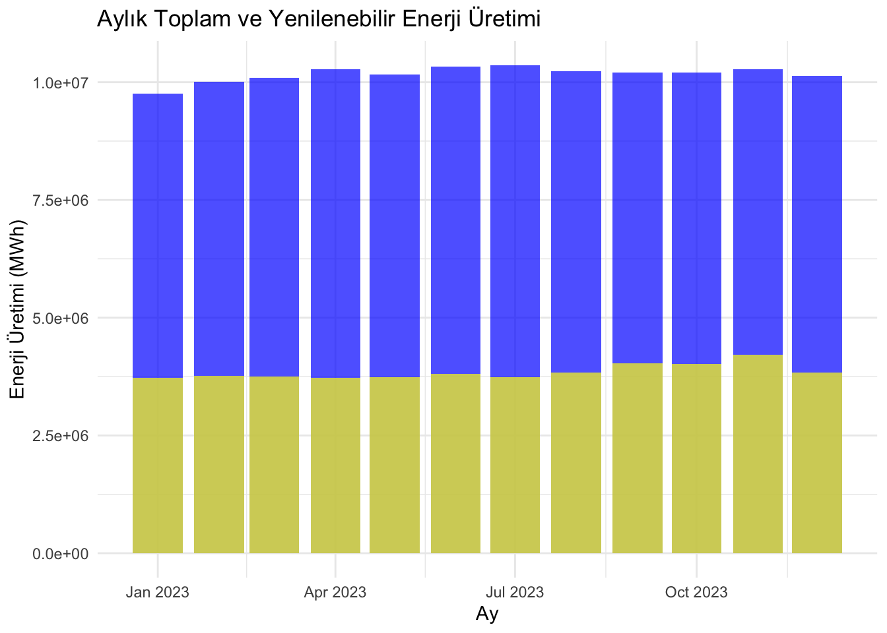
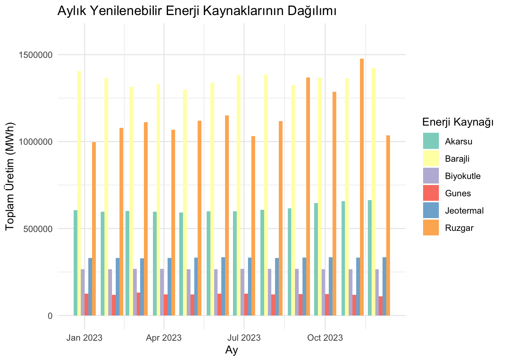

# Gerekli kütüphaneyi yüklemeniz gerekmektedir
library(readr)
# Veri setimizi okuyoruz
data <- read_csv("../muy665-bahar2024-takim-inci_taneleri/ElkUrtm23.csv")
# Üretim türlerinin toplamlarını hesaplıyoruz
production_types <- colSums(data[, 4:ncol(data)])
# Karbon bazlı ve yenilenebilir enerji kaynaklarını tanımlıyoruz
carbon_sources <- c("DogalGaz", "Linyit", "IthalKomur", "TasKomur")
renewable_sources <- c("Barajli", "Ruzgar", "Gunes", "Jeotermal", "Biyokutle")
# Karbon bazlı ve yenilenebilir kaynakların toplam üretimini hesaplıyoruz
carbon_total <- sum(production_types[carbon_sources])
renewable_total <- sum(production_types[renewable_sources])
# Pasta grafiği için yeni bir vektör oluşturuyoruz
energy_categories <- c(Karbon = carbon_total, Yenilenebilir = renewable_total)
# Yüzdeleri hesaplıyoruz
percentages <- round(100 * energy_categories / sum(energy_categories), 1)
# Yüzdelerle etiketleri oluşturuyoruz
labels <- paste(names(energy_categories), ": ", percentages, "%", sep="")
# Pasta grafiği çizdiriyoruz
pie(energy_categories, labels = labels, main = "Elektrik Üretimi: Karbon Bazlı vs. Yenilenebilir", col = c("darkgray", "green"))Zamanın Akışında Enerji: Türkiye’nin Enerji Kaynakları Üzerine Dinamik Bir Analiz
İNCİ TANELERİ Grubu Proje Sayfasına Hoşgeldiniz
Projemizle ilgili güncellemelerden haberdar olmak için bu alanı takip edin.
[Projemizin ön gösterimi için lütfen tıklayınız]
1 Proje Genel Bakış ve Kapsamı
Bu proje kapsamında, yenilenebilir ve karbon bazlı enerji üretim verilerini detaylı bir şekilde analiz etmeyi hedefliyoruz.
Amacımız, veri analizi ve görselleştirme tekniklerini kullanarak, enerji üretimi üzerindeki mevsimsel değişimleri, trendleri ve ilişkileri ortaya çıkarmak ve değerlendirmektir.
1. Veri Toplama ve Hazırlık: İlk olarak, enerji üretimi verilerini titizlikle topladık ve ilgili verilerin işlenebilecek hale gelmesi için çalıştık. Bu aşamada, veri setini temizleme, eksik değerleri doldurma ve format değişikliklerini yaparak veri setini analiz için hazır hale getirmiş olduk.
2. Aylık Toplam Üretim Analizi: Veri setimiz, her ayın toplam yenilenebilir ve karbon bazlı enerji üretimini içeriyor. Bu aşamada, aylık üretim verilerini inceleyerek hangi ayların daha yüksek veya düşük üretim seviyelerine sahip olduğunu belirleyecek ve bu eğilimleri analiz edeceğiz.
3. Mevsimsel Değişim Analizi: Ayları mevsimlere göre gruplayarak, mevsimsel değişimlerin enerji üretimi üzerindeki etkilerini değerlendireceğiz. Bu analiz, mevsimler arasındaki enerji üretimi farklarını ve hangi mevsimlerde yenilenebilir/karbon bazlı enerji kaynaklarının daha fazla kullanıldığını belirleyecektir.
4. Grafiksel Temsiller ve Trend Analizi: Veri setindeki eğilimleri daha iyi görselleştirmek için çeşitli grafikler kullanacağız. Bar grafikleri, çizgi grafikleri ve diğer görsel araçlar kullanarak veri setindeki trendleri görselleştirecek ve bu trendleri analiz edeceğiz.
5. Sonuçların İncelenmesi ve Yorumlanması: Projemizin sonuçlarını dikkatlice inceleyip yorumlayacağız. Enerji üretimi üzerindeki mevsimsel değişimlerin ve trendlerin, iş stratejilerine, enerji politikalarına ve sürdürülebilirlik çabalarına olan olası etkilerini detaylı bir şekilde tartışacağız.
Bu proje kapsamında, enerji sektöründeki veri odaklı bir yaklaşım kullanarak enerji üretimi verilerini analiz etme ve yorumlama konusunda bir çerçeve sunmayı amaçlamaktadır.
2 Veri
2023 Yılı Elektrik Üretiminin Kaynak Bazlı Saatlik Veri Tabanı
2.1 Veri Kaynağı
EPİAŞ(Enerji Piyasaları İşletme A.Ş.) ŞEFFAFLIK PLATFORMU [Veri Setine Erişmek için Tıklayınız]
2.2 Veri Hakkında Genel Bilgiler
Veri setimiz, Türkiye’deki elektrik üretim kaynaklarının saatlik olarak üretimini göstermektedir. Toplam 8760 saatlik veri bulunmaktadır, her bir kayıt bir saatlik zaman dilimini temsil eder. Veri seti, çeşitli enerji kaynaklarına göre üretilen elektrik miktarlarını içermektedir.
Tarih: Gözlem yapılan tarih (gün/ay/yıl), Saat: Gözlem yapılan saat (24 saat formatında) ve Üretilen elektrik miktarı Megawatt (MW) cinsindedir.
2.3 Tercih Sebebi
Bu proje kapsamında, bir grup olarak enerji sektöründe önemli bir sorunu ele almayı amaçladık.
Bu amaç doğrultusunda, enerji üretimi verilerini analiz etmek için bir veri seti seçme kararı aldık. İşte grup olarak bu veri setini seçme nedenlerimiz:
İşbirliği ve Ortak Hedefler: Grup üyeleri olarak birlikte çalışarak enerji sektöründeki belirli bir problemi çözmeyi hedefledik. Enerji üretimi verilerini analiz etmek, ortak hedeflerimize ulaşmamızı sağlayacak güçlü bir başlangıç noktasıydı.
Analitik Yeteneklerimizin Birleştirilmesi: Grup üyeleri arasında çeşitli analitik becerilere sahip bireyler bulunmaktadır. Bu veri setini seçerek, farklı perspektiflerden faydalanarak birlikte güçlü bir analiz yapma potansiyelimizi görmüş olduk.
Ortak İlgi Alanları ve Uzmanlık Alanları: Grup üyeleri, enerji sektörüne ilgi duyan veya bu alanda uzmanlaşmış kişilerdir. Bu veri seti, ortak ilgi alanlarımıza ve uzmanlık alanlarımıza hizmet ediyor ve bizi daha etkili bir şekilde çalışmaya teşvik ediyor.
Birlikte Öğrenme ve Gelişme İhtiyacı: Grup olarak, belirli bir konuda daha fazla bilgi edinmek ve analitik becerilerimizi geliştirmek istiyoruz. Bu veri setini seçerek, birlikte çalışarak yeni bilgiler öğrenme ve becerilerimizi geliştirme fırsatı bulacağımızı düşündük.
Proje Gereksinimleri ve Amaçları: Projemizin gereksinimleri doğrultusunda, enerji üretimi verilerini analiz etmek önemliydi. Bu veri seti, projemizin amaçlarına uygun bir şekilde, analiz yapmak için uygun bir temel sağlıyor.
2.4 Verilerin Ön İşlemelerin Yapılması
Veri analizi sürecinde, verinin doğru ve güvenilir sonuçlar üretmesi için ön işleme adımları oldukça önemlidir. Bu adımlar, veri setinin temizlenmesi, eksik değerlerin doldurulması ve gerekiyorsa verinin dönüştürülmesi gibi işlemleri içerir. İşte veri ön işleme adı altında gerçekleştirdiğimiz detaylı işlemler:
Veri Temizleme:
Veri setindeki gereksiz veya tutarsız verileri belirleyerek kaldırdık.
Anlamsız veya yanlış verileri düzeltmek için veri setini inceledik ve düzenledik.
Veri setindeki gereksiz sütunları (değişkenleri) kaldırdık veya gereksiz gözlemleri (satırları) sildik.
Eksik Veri Analizi ve Doldurma:
Eksik verileri belirleyerek, eksik veri analizi yaptık ve eksik veri sayısını ve dağılımını değerlendirdik.
Eksik verileri uygun bir yöntemle doldurarak veri kaybını minimize ettik. Örneğin, eksik sayısal verileri ortalama veya medyan değerleri ile doldurduk, eksik kategorik verileri mod değerleriyle doldurduk veya eksik verileri tahmin etmek için makine öğrenimi modelleri kullandık.
Veri Dönüşümleri:
Kategorik değişkenleri sayısal değerlere dönüştürdük. Bu, makine öğrenimi modellerinin kullanılabilirliğini artırabilir.
Gerektiğinde, sayısal değişkenlerin dağılımlarını dönüştürerek normal dağılıma daha yakın hale getirdik. Bu, model performansını iyileştirebilir.
Aykırı Değerleri İncelenmesi ve İşlenmesi:
Aykırı değerleri belirleyerek, bu değerlerin neden kaynaklandığını ve nasıl işlenebileceğini inceledik.
Aykırı değerleri düzeltmek veya kaldırmak için uygun yöntemleri kullandık. Örneğin, aykırı değerleri ortalama veya medyan değerleri ile değiştirdik veya sınırladık.
Bu ön işleme adımları, veri setimizi analiz etmeden önce temizlememizi ve hazırlamamızı sağlar. Doğru ön işleme adımları kullanılarak, veri setimizin kalitesini artırabilir ve sonuçlarımızın güvenilirliğini sağlayabiliriz
3 Analiz
Bu kapsamda 8 farklı grafik ile elimizdeki “2023 Yılı Elektrik Üretiminin Kaynak Bazlı Saatlik Veri Tabanı” veri setini analiz edeceğiz.
3.1 Elektrik Üretiminde Yenilenebilir Enerji ve Karbon Tabanlı Kaynakların Payı: Bir Karşılaştırma
Grafiğimiz, elektrik üretimi çeşitli kaynaklardan sağlanmaktadır. Bu kaynaklar arasında hem karbon bazlı hem de yenilenebilir enerji kaynakları bulunmaktadır. Karbon bazlı kaynaklar olarak doğalgaz, linyit, ithal kömür ve taş kömürü öne çıkmaktadır. Yenilenebilir enerji kaynakları ise barajlı hidroelektrik, rüzgar, güneş, jeotermal ve biyokütle gibi çeşitlilik göstermektedir.
Grafiklerimiz, toplam elektrik üretimi içindeki karbon bazlı ve yenilenebilir enerji kaynaklarının payını göstermektedir. Karbon bazlı kaynakların hala önemli bir paya sahip olduğunu gözlemlemekteyiz; ancak yenilenebilir enerji kaynaklarının da giderek artan bir oranda elektrik üretiminde rol oynadığını belirtmek gerekir. Bu durum, sürdürülebilir enerji kullanımına doğru yapılan geçişin bir göstergesi olarak değerlendirilebilir.
R kodu:
3.2 Haftaiçi ve Haftasonu Gerçekleşen Üretim Grafiğinin Aylara Göre Dağılımı
Grafiğimiz, aylık bazda hafta içi ve hafta sonu günlerine ayrılmış elektrik üretim miktarlarını karşılaştırarak sunmaktadır. Turuncu çubuklar, hafta içi günlerde üretilen elektrik miktarını, mavi çubuklar ise hafta sonlarında üretilen miktarı temsil etmektedir. Yıl boyunca, Ocak’tan Aralık’a kadar olan veriler incelendiğinde, hafta içi günlerde üretilen elektrik miktarının hafta sonlarına göre daha yüksek olduğunu gözlemliyoruz.
Özellikle Mart ve Ekim aylarında, hafta içi elektrik üretiminin pik yaptığını belirlemek mümkün. Bu durum, endüstriyel aktivitelerin ve genel enerji talebinin yoğun olduğu dönemlerde daha belirgin hale gelmektedir. Diğer yandan, Mayıs ve Haziran aylarında hafta içi ve hafta sonu arasındaki üretim farkı azalmaktadır. Yaz tatillerinin başlaması ve hava sıcaklıklarının yükselmesi gibi sebeplerle iş yerleri ve okulların aktivitelerinde gözlemlenen düşüş bu duruma katkıda bulunuyor olabilir.
Yıl sonuna doğru, özellikle Aralık ayında, hafta içi ve hafta sonu elektrik üretimi arasındaki fark en düşük seviyeye ulaşmaktadır. Bu, genel tatil sezonunun getirdiği azalmaların, iş günlerinde de elektrik tüketimini etkilediğini göstermektedir.
R kodu:
# Gerekli kütüphaneleri yüklemeniz gerekmektedir
library(ggplot2)
library(dplyr)
library(lubridate)
library(scales) # Binlik ayırıcılar için scales kütüphanesini kullanacağız
# Veri setimizi okuyoruz
data <- read.csv("../muy665-bahar2024-takim-inci_taneleri/ElkUrtm23.csv")
# Sütun adlarını düzeltiyoruz
names(data)[names(data) == "ï..Tarih"] <- "Tarih"
# Tarih sütununu gün.ay.yıl formatına çeviriyoruz
data$Tarih <- as.Date(data$Tarih, format="%d.%m.%Y")
# NA değerlerini veri setinden çıkartıyoruz
data <- na.omit(data)
# Hafta sonu/hafta içi ve ay bilgilerini buluyoruz
data$GunTipi <- ifelse(wday(data$Tarih) %in% c(1, 7), "Hafta Sonu", "Hafta İçi")
data$Ay <- month(data$Tarih, label = TRUE)
# Ay ve gün tipine göre gruplayın ve toplamı alıp, gruplamayı kaldırıyoruz
monthly_data <- data %>%
group_by(Ay, GunTipi) %>%
summarise(Toplam = sum(Toplam, na.rm = TRUE), .groups = "drop")
# Grafiği çizdiriyoruz
ggplot(monthly_data, aes(x=Ay, y=Toplam, fill=GunTipi)) +
geom_bar(stat="identity", position="dodge") +
labs(title="Aylık Toplam Elektrik Üretimi: Hafta İçi vs Hafta Sonu",
x="Ay", y="Toplam Elektrik (MWh)") +
scale_y_continuous(labels = scales::comma) + # Binlik ayırıcılar ekleniyor
scale_fill_manual(values=c("darkblue", "orange")) +
theme_minimal()3.3 Üretim Türüne Göre Mevsimsel Dağılım Grafiği
Grafiğimiz, her ay için yenilenebilir enerji kaynakları ile fosil yakıt kaynaklarının toplam elektrik üretim miktarlarını karşılaştırıyor. Yenilenebilir enerji kaynakları, çevresel etkileri düşük ve sürdürülebilir bir enerji sağladığı için önemlidir. Bu kaynaklar arasında barajlı, akarsu, rüzgar, güneş ve biyokütle gibi çeşitli kaynaklar yer alıyor. Grafiğimizde bu kaynakların aylık üretim toplamları mavi barlarla gösteriliyor.
Diğer yandan, fosil yakıt kaynakları arasında doğalgaz, linyit, ithal kömür, fuel oil ve taş kömürü bulunuyor. Fosil yakıtlar, karbon emisyonlarına neden olarak çevresel sorunlara katkıda bulunmalarına rağmen, hala dünya genelinde enerji üretiminin önemli bir kısmını oluştururlar. Grafiğimizde fosil yakıt kaynaklarının aylık üretim toplamları turuncu barlarla gösteriliyor.
Grafiğimiz, her iki enerji türünün aylık üretim miktarlarını yan yana göstererek, zaman içindeki üretim değişikliklerini ve eğilimleri izlemeyi kolaylaştırır. Örneğin, belirli aylarda yenilenebilir enerji üretiminin artışı veya azalışı, politikaların, mevsimsel koşulların veya piyasa dinamiklerinin bir sonucu olabildiğini düşünmekteyiz. Bu grafik, enerji üretimindeki değişiklikleri anlamak için önemlidir.
R kodu:
# Gerekli kütüphaneleri yükleyin
library(ggplot2)
library(dplyr)
library(tidyr)
# Veriyi doğru kodlama ile okuyun
data <- read.csv("../muy665-bahar2024-takim-inci_taneleri/ElkUrtm23.csv")
# Sütun adlarını düzeltiyoruz
names(data)[names(data) == "ï..Tarih"] <- "Tarih"
# Tarih sütununu gün.ay.yıl formatına çeviriyoruz
data$Tarih <- as.Date(data$Tarih, format = "%d.%m.%Y")
# Ay ve mevsim bilgilerini ekleyin
data$Ay <- as.numeric(format(data$Tarih, "%m"))
data$Mevsim <- ifelse(data$Ay %in% c(12, 1, 2), "Kış",
ifelse(data$Ay %in% c(3, 4, 5), "İlkbahar",
ifelse(data$Ay %in% c(6, 7, 8), "Yaz", "Sonbahar")))
# Veriyi uzun formatına çeviriyoruz
long_data <- data %>%
select(Mevsim, DogalGaz, Barajli, Linyit, Akarsu, IthalKomur, Ruzgar, Gunes, FuelOil, Jeotermal, TasKomur, Biyokutle, Uluslararasi, AtikIsi) %>%
pivot_longer(cols = -Mevsim, names_to = "UretimTuru", values_to = "Miktar")
# Mevsimlere ve üretim türlerine göre gruplayıp toplam üretimi hesaplıyoruz
seasonal_data <- long_data %>%
group_by(Mevsim, UretimTuru) %>%
summarise(ToplamMiktar = sum(Miktar, na.rm = TRUE))
# Grafik çizdiriyoruz
ggplot(seasonal_data, aes(x = Mevsim, y = ToplamMiktar, fill = UretimTuru)) +
geom_bar(stat = "identity", position = position_dodge()) +
scale_y_continuous(labels = label_comma()) + # y eksenindeki sayıları virgülle ayrılmış biçimde göster
labs(title = "Mevsimlere Göre Enerji Üretim Türleri",
x = "Mevsim",
y = "Toplam Üretim (MWh)",
fill = "Üretim Türü") +
theme_minimal() +
theme(axis.text.x = element_text(angle = 45, hjust = 1))
3.4 Yıllık Olarka Toplam Üretilen Enerji Karşılaştırması
Açıklama gelecek…
R kodu:
library(tidyverse)
# Enerji kaynaklarına göre toplamları hesapla
energy_totals <- colSums(data[, c("DogalGaz", "Barajli", "Linyit", "Akarsu", "IthalKomur", "Ruzgar",
"Gunes", "FuelOil", "Jeotermal", "TasKomur", "Biyokutle",
"Uluslararasi", "AtikIsi")])
# Toplam üretim
total_production <- sum(energy_totals)
# Yüzdelik hesaplamaları yap
energy_percentages <- energy_totals / total_production * 100
# Enerji kaynaklarını ve yüzdelerini bir dataframe'e çevir
energy_df <- data.frame(Enerji_Kaynagi = names(energy_percentages), Yuzde = energy_percentages)
# Pie chart çiz
pie(energy_df$Yuzde, labels = paste(energy_df$Enerji_Kaynagi,
sprintf("(%.1f%%)", energy_df$Yuzde)),
main = "Yıllık Enerji Üretiminin Kaynaklara Göre Dağılımı",
col = rainbow(length(energy_df$Yuzde)))
# Efsane ekleme
legend("topright", legend = energy_df$Enerji_Kaynagi, fill = rainbow(length(energy_df$Yuzde)))3.5 Hidrokarbon Kaynakların Dağılımı
Açıklama gelecek…
R kodu:
library(tidyverse)
library(lubridate)
# Aylık toplamları hesapla ve hidrokarbon kaynaklarına göre ayır
monthly_hydrocarbons <- data %>%
mutate(Ay = floor_date(Tarih, "month")) %>%
group_by(Ay) %>%
summarise(
DogalGaz = sum(DogalGaz),
IthalKomur = sum(IthalKomur),
FuelOil = sum(FuelOil),
TasKomur = sum(TasKomur),
.groups = 'drop'
)
# Erişilebilir format için veriyi long formata çevir
monthly_long <- pivot_longer(monthly_hydrocarbons, cols = c(DogalGaz, IthalKomur, FuelOil, TasKomur),
names_to = "Enerji_Kaynagi", values_to = "Uretim")
# Grafik çiz
ggplot(monthly_long, aes(x = Ay, y = Uretim, fill = Enerji_Kaynagi)) +
geom_bar(stat = "identity", position = position_dodge()) +
scale_fill_brewer(palette = "Set1") +
labs(title = "Aylık Hidrokarbon Enerji Kaynaklarının Dağılımı",
x = "Ay",
y = "Toplam Üretim (MWh)",
fill = "Enerji Kaynağı") +
theme_minimal()Warning: Removed 4 rows containing missing values or values outside the scale range
(`geom_bar()`).
3.6 Hidrokarbon Kaynakların Dağılımı
Açıklama gelecek…
R kodu:
library(tidyverse)
library(lubridate)
# Aylık toplamları hesapla ve hidrokarbon kaynaklarına göre ayır
monthly_hydrocarbons <- data %>%
mutate(Ay = floor_date(Tarih, "month")) %>%
group_by(Ay) %>%
summarise(
DogalGaz = sum(DogalGaz),
IthalKomur = sum(IthalKomur),
FuelOil = sum(FuelOil),
TasKomur = sum(TasKomur),
.groups = 'drop'
)
# Erişilebilir format için veriyi long formata çevir
monthly_long <- pivot_longer(monthly_hydrocarbons, cols = c(DogalGaz, IthalKomur, FuelOil, TasKomur),
names_to = "Enerji_Kaynagi", values_to = "Uretim")
# Grafik çiz
ggplot(monthly_long, aes(x = Ay, y = Uretim, fill = Enerji_Kaynagi)) +
geom_bar(stat = "identity", position = position_dodge()) +
scale_fill_brewer(palette = "Set1") +
labs(title = "Aylık Hidrokarbon Enerji Kaynaklarının Dağılımı",
x = "Ay",
y = "Toplam Üretim (MWh)",
fill = "Enerji Kaynağı") +
theme_minimal()Warning: Removed 4 rows containing missing values or values outside the scale range
(`geom_bar()`).
3.7 İthal Edilen ve Üretilen Enerji Karşılaştırılması
Açıklama gelecek…
R kodu:
library(tidyverse)
# Veriyi İthal ve Yerli olarak grupla
data_long <- pivot_longer(data,
cols = c("DogalGaz", "Linyit", "IthalKomur", "FuelOil", "TasKomur", "Uluslararasi",
"Barajli", "Akarsu", "Ruzgar", "Gunes", "Jeotermal", "Biyokutle", "AtikIsi"),
names_to = "Enerji_Kaynagi", values_to = "Uretim")
# Enerji kaynaklarını İthal ve Yerli olarak etiketle
data_long <- data_long %>%
mutate(Grup = case_when(
Enerji_Kaynagi %in% c("DogalGaz", "Linyit", "IthalKomur", "FuelOil", "TasKomur", "Uluslararasi") ~ "İthal",
TRUE ~ "Yerli"
))
# Yıllık toplamları hesapla
yearly_totals <- data_long %>%
group_by(Grup) %>%
summarise(ToplamUretim = sum(Uretim, na.rm = TRUE))
# Bar grafiği çiz
ggplot(yearly_totals, aes(x = Grup, y = ToplamUretim, fill = Grup)) +
geom_col() +
labs(title = "Yıllık Toplam Üretim: İthal vs. Yerli",
x = "Grup",
y = "Toplam Üretim (MWh)") +
scale_fill_manual(values = c("İthal" = "red", "Yerli" = "green")) +
theme_minimal()
3.8 Toplam Üretimin Hidrokarbon Üretim İle Karşılaştırılması
Açıklama gelecek…
R kodu:
library(tidyverse)
library(lubridate)
# Veriyi yükle
data <- read.csv("ElkUrtm23.csv")
# Tarih formatını düzelt
data$Tarih <- dmy(data$Tarih)
# Aylık toplamları hesapla
monthly_data <- data %>%
mutate(Ay = floor_date(Tarih, "month")) %>%
group_by(Ay) %>%
summarise(
Toplam = sum(Toplam),
Hidrokarbon = sum(DogalGaz + IthalKomur + FuelOil + TasKomur),
.groups = 'drop'
)
# Yüzdesel dağılımı hesapla
monthly_data$HidrokarbonYuzde = (monthly_data$Hidrokarbon / monthly_data$Toplam) * 100
# Grafik çiz
ggplot(monthly_data, aes(x = Ay)) +
geom_col(aes(y = Toplam), fill = "blue", alpha = 0.7) +
geom_col(aes(y = Hidrokarbon), fill = "red", alpha = 0.7) +
labs(title = "Aylık Toplam ve Hidrokarbon Enerji Üretimi", x = "Ay", y = "Enerji Üretimi (MWh)") +
theme_minimal()Warning: Removed 1 row containing missing values or values outside the scale range
(`geom_col()`).
Removed 1 row containing missing values or values outside the scale range
(`geom_col()`).
# Yüzdelik dağılım grafiği
ggplot(monthly_data, aes(x = Ay, y = HidrokarbonYuzde, group = 1)) +
geom_line(color = "darkred", size = 1) +
geom_point(color = "darkred", size = 2) +
labs(title = "Hidrokarbon Enerji Üretiminin Yüzdesel Dağılımı", x = "Ay", y = "Yüzde (%)") +
theme_minimal()Warning: Using `size` aesthetic for lines was deprecated in ggplot2 3.4.0.
ℹ Please use `linewidth` instead.Warning: Removed 1 row containing missing values or values outside the scale range
(`geom_line()`).Warning: Removed 1 row containing missing values or values outside the scale range
(`geom_point()`).
3.9 Toplam Üretimin Yenilenebilir Enerji Üretimi İle Karşılaştırılması
Açıklama gelecek…
R kodu:
library(tidyverse)
library(lubridate)
# Veriyi yükle
data <- read.csv("ElkUrtm23.csv")
# Tarih ve Saat sütunlarını birleştirerek doğru datetime formatını oluştur
data$DateTime <- mdy_hm(paste(data$Tarih, data$Saat))Warning: 5305 failed to parse.# Artık 'Tarih' ve 'Saat' sütunlarına ihtiyacımız yok, bu yüzden silebiliriz
data <- data %>% select(-Tarih, -Saat)
# Aylık toplamları hesapla
monthly_data <- data %>%
mutate(Ay = floor_date(DateTime, "month")) %>%
group_by(Ay) %>%
summarise(
Toplam = sum(Toplam),
Yenilenebilir = sum(Barajli + Akarsu + Ruzgar + Gunes + Jeotermal + Biyokutle),
.groups = 'drop'
)
# Yüzdesel dağılımı hesapla
monthly_data$YenilenebilirYuzde = (monthly_data$Yenilenebilir / monthly_data$Toplam) * 100
# Grafik çiz
ggplot(monthly_data, aes(x = Ay)) +
geom_col(aes(y = Toplam), fill = "blue", alpha = 0.7) +
geom_col(aes(y = Yenilenebilir), fill = "green", alpha = 0.7) +
labs(title = "Aylık Toplam ve Yenilenebilir Enerji Üretimi", x = "Ay", y = "Enerji Üretimi (MWh)") +
theme_minimal()Warning: Removed 1 row containing missing values or values outside the scale range
(`geom_col()`).Warning: Removed 1 row containing missing values or values outside the scale range
(`geom_col()`).
# Yüzdelik dağılım grafiği
ggplot(monthly_data, aes(x = Ay, y = YenilenebilirYuzde, group = 1)) +
geom_line(color = "red", size = 1) +
geom_point(color = "red", size = 2) +
labs(title = "Yenilenebilir Enerji Üretiminin Yüzdesel Dağılımı", x = "Ay", y = "Yüzde (%)") +
theme_minimal()Warning: Removed 1 row containing missing values or values outside the scale range
(`geom_line()`).Warning: Removed 1 row containing missing values or values outside the scale range
(`geom_point()`).
3.10 Yenilenebilir Kaynaklarla Üretilen Enerjinin Dağılımı
Açıklama gelecek…
R kodu:
library(tidyverse)
library(lubridate)
# Aylık toplamları hesapla ve yenilenebilir enerji kaynaklarına göre ayır
monthly_renewables <- data %>%
mutate(Ay = floor_date(DateTime, "month")) %>%
group_by(Ay) %>%
summarise(
Barajli = sum(Barajli),
Akarsu = sum(Akarsu),
Ruzgar = sum(Ruzgar),
Gunes = sum(Gunes),
Jeotermal = sum(Jeotermal),
Biyokutle = sum(Biyokutle),
.groups = 'drop'
)
# Erişilebilir format için veriyi uzun formata çevir
monthly_long <- pivot_longer(monthly_renewables, cols = c(Barajli, Akarsu, Ruzgar, Gunes, Jeotermal, Biyokutle),
names_to = "Enerji_Kaynagi", values_to = "Uretim")
# Grafik çiz
ggplot(monthly_long, aes(x = Ay, y = Uretim, fill = Enerji_Kaynagi)) +
geom_bar(stat = "identity", position = position_dodge()) +
scale_fill_brewer(palette = "Set3") +
labs(title = "Aylık Yenilenebilir Enerji Kaynaklarının Dağılımı",
x = "Ay",
y = "Toplam Üretim (MWh)",
fill = "Enerji Kaynağı") +
theme_minimal()Warning: Removed 6 rows containing missing values or values outside the scale range
(`geom_bar()`).
3.11 Keşifsel Veri Analizi
xxxxxx
3.12 Trend Analizi
xxxxxx
3.13 Model Uydurma
xxxxxx
3.14 Sonuçlar
xxxxxx
4 Sonuçlar ve Ana Çıkarımlar
xxxxxx